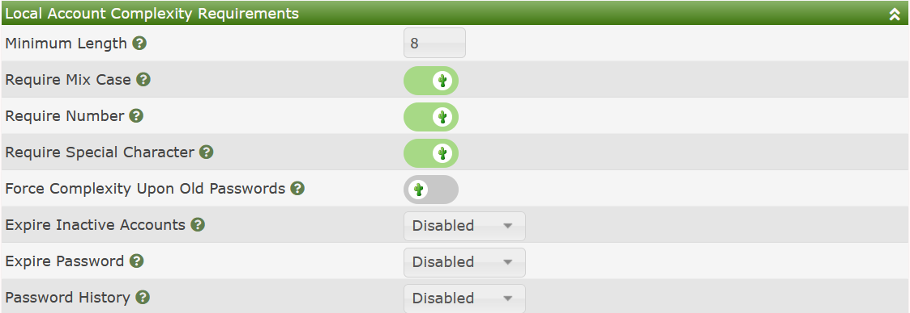
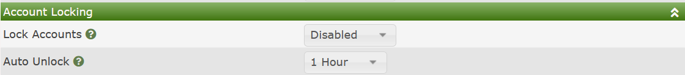

Cacti's Built-in Authentication is sufficient for most small work-group Cacti installs. All users and their passwords are stored on the local Cacti database, and are stored in a method where they are not easily compromised.
Additionally, Cacti has the ability to remember password history, force complexity rules, minimum lengths, force change frequency, etc. on new passwords. These settings are configurable as well. The image below shows the local complexity settings available in Cacti.

Those options include:
If a user attempts to use an incorrect password more than a certain number of times without a successful login, Cacti can automatically lock out the user from that account for a certain amount of time. This technique prevents hackers from continually attempting to break a users password from the Cacti interface. The images below shows the two settings associated with this Cacti feature.

The settings are fairly self explanatory, so additional detail is no provided here.
Copyright (c) 2004-2024 The Cacti Group